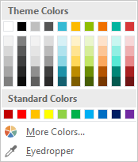
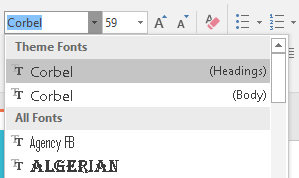
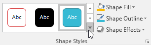
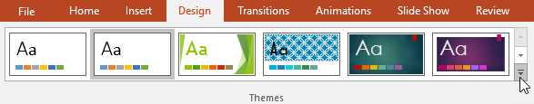
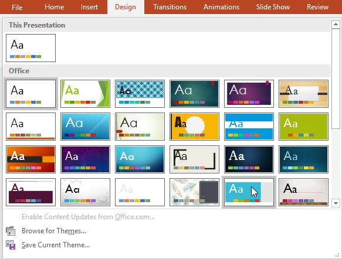
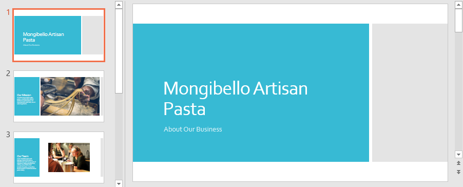
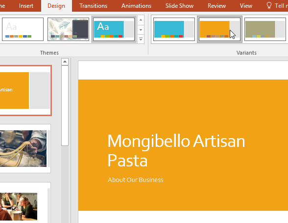

O temă este o combinație predefinită de culori, fonturi și efecte. Diferite teme utilizează, de asemenea, diferite aspecte de diapozitive. Ați folosit deja o temă, chiar dacă nu o știați: tema implicită Office. Puteți alege dintr-o varietate de teme noi în orice moment, oferind întregii dumneavoastră prezentări un aspect consistent și profesional.
Ce este o temă?În PowerPoint, temele vă oferă o modalitate rapidă și ușoară de a schimba designul prezentării. Acestea controlează paleta de culori primare, fonturile de bază, aspectul diapozitivelor și alte elemente importante. Toate elementele unei teme vor funcționa bine împreună, ceea ce înseamnă că nu va trebui să petreceți atât de mult timp formatând prezentarea.
Fiecare temă folosește propriul set de machete de diapozitive. Aceste aspecte controlează modul în care este aranjat conținutul, astfel încât efectul poate fi dramatic. În exemplele de mai jos, puteți vedea că substituenții, fonturile și culorile sunt diferite.
Fiecare temă PowerPoint, inclusiv tema Office implicită, are propriile elemente de temă. Aceste elemente includ:



Când treceți la o altă temă, toate aceste elemente se vor actualiza pentru a reflecta noua temă. Puteți schimba drastic aspectul prezentării dvs. în câteva clicuri.
Aplicarea temelorToate temele incluse în PowerPoint se află în grupul Teme din fila Design. Temele pot fi aplicate sau modificate în orice moment.
Pentru a aplica o temă:


